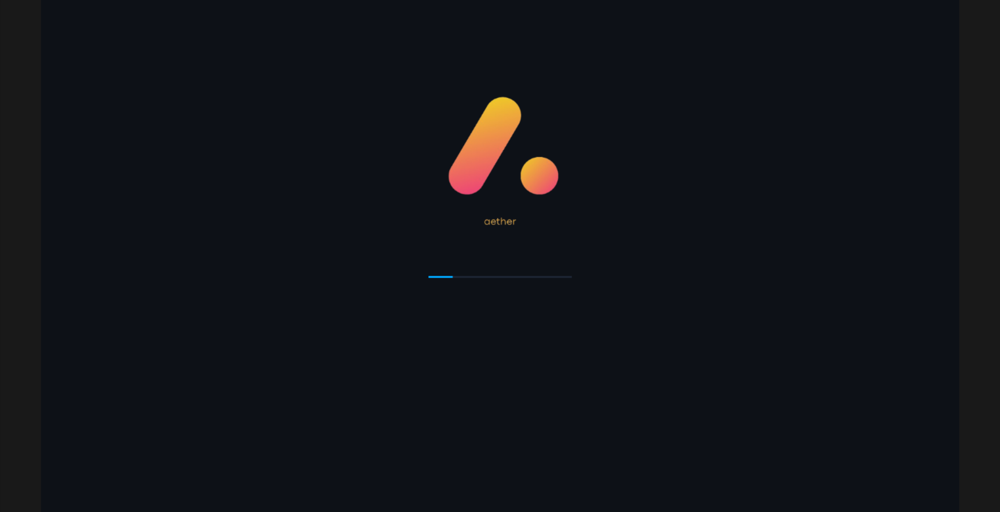

Grim
Safety-First Systems Programming with a Modern Interface
written in #![no_std] Rust
STATUS: EXPERIMENTAL / PRIVATE RESEARCH

Memory Safety at the Core
Grim leverages Rust's ownership model to eliminate entire classes of memory errors. It is a research platform for future-proof server operating systems, exploring high-performance display drivers and native GUI environments.